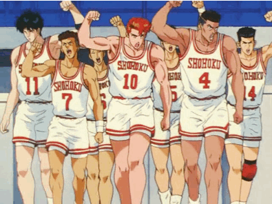

El tiro con arco es un deporte olímpico en el cual se utiliza un arco para disparar flechas. Consiste en acertar lo más cerca del centro de la diana para obtener el máximo número de puntos.

El basquetbol o baloncesto, es un deporte en el cual compiten dos equipos de cinco jugadores cada uno. El objetivo es introducir la pelota (balón) en el aro (cesta o canasta) del equipo contrario, que se encuentra ubicado a 3.05 metros de altura.

El béisbol (del inglés baseball; de base, y ball, 'pelota'), también llamado baseball o juego de pelota, es un deporte de equipo jugado por dos equipos de nueve jugadores cada uno.
Tiro con Arco
El tiro con arco es uno de los deportes con más historia en la era moderna que aún se practican, y está totalmente unido a la evolución de la civilización. El origen proviene del uso de esta arma como instrumento de caza y como instrumento bélico. Con la aparición de las armas de fuego quedó obsoleto como instrumento profesional de uso general. Como deporte, tiene una historia que se comienza hace miles de años. Como avance cultural, fue comparable al descubrimiento del fuego y a la invención de la rueda.
Hasta el momento existen siete modalidades en el tiro con arco, las cuales son:
- Tiro con arco sobre diana al aire libre
- Tiro con arco en sala
- Tiro de campo
- Tiro con arco de larga distancia
- Carrera arco
- Esquí arco
- Recorrido de bosque
Basquetbol
El baloncesto (del inglés basketball; de basket, 'canasta', y ball, 'pelota'), también conocido como básquetbol, basquetbol o simplemente básquet, es un deporte de equipo, jugado entre dos equipos de cinco jugadores cada uno en cuatro períodos de cuartos de diez minutos cada uno, doce minutos cada cuarto en la NBA. El objetivo del equipo es anotar puntos introduciendo su balón de baloncesto por la canasta, un aro a 3,05 metros sobre la superficie de la pista de juego del que cuelga una red. La puntuación por cada canasta o cesta es de dos o tres puntos, dependiendo de la posición desde la que se efectúa el tiro a la canasta, o de uno, si se trata de un tiro libre por una falta de un jugador contrario. El equipo ganador es el que obtiene el mayor número de puntos.
El contacto con las manos junto a la pelota debe de ser continuo y de forma consecutiva. Los jugadores, también llamados basquetbolistas o baloncestistas, no pueden trasladarse de un lado a otro sujetando la pelota, sino botándola contra el suelo. El equipo en posesión del balón o atacante, intenta anotar puntos mediante tiros, entradas a canasta o mates, mientras que el equipo defensor busca impedirlo robando la pelota o efectuando tapones. Cuando un tiro hacia la canasta fracasa, los jugadores de ambos equipos intentan atrapar el rebote.
Béisbol
El objetivo del juego es golpear una pelota con un bate (batear), desplazando la pelota a través del campo y correr por el campo interno de tierra (infield) buscando alcanzar la mayor cantidad de bases posibles hasta dar la vuelta a la base desde donde se bateó (home) para lograr anotar el tanto conocido como carrera. Los jugadores defensivos, mientras tanto, buscan la pelota bateada para eliminar al jugador que bateó la pelota o a otros corredores, antes que estos lleguen primero a alguna de las bases o consigan anotar la carrera (véase Reglas para más detalles del juego).
El equipo que anote más carreras al cabo de los 9 episodios, llamados innings (o entradas) que dura el encuentro, es el que resulta ganador. Si al término de las nueve entradas regulares persiste un marcador igualado en carreras, el encuentro se extiende cuanto sea necesario para que haya un ganador, ya que según las reglas básicas del juego no existe el empate, permitido solo en ligas amateurs e infantiles para limitar el desgaste de los jugadores.